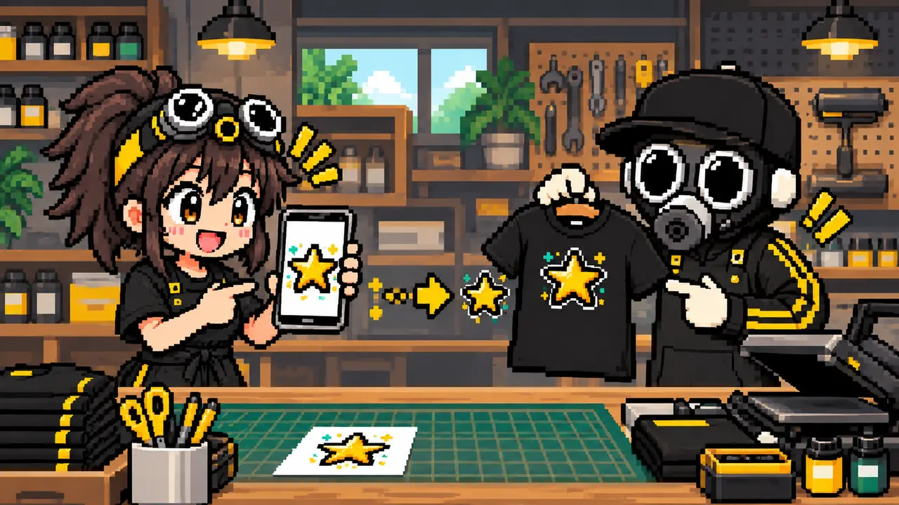
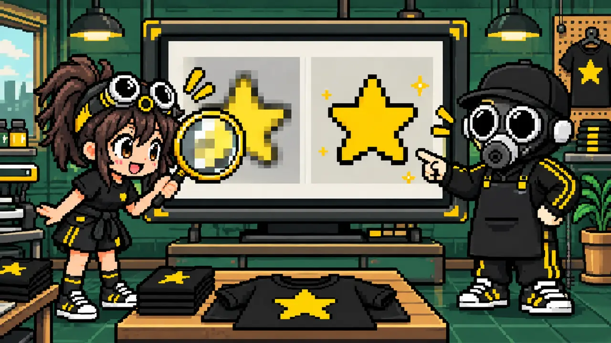
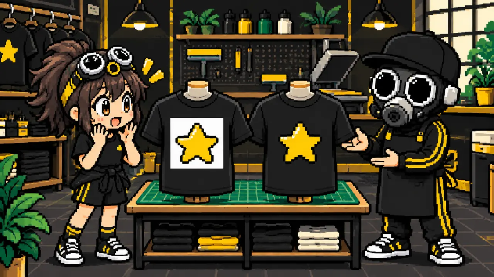
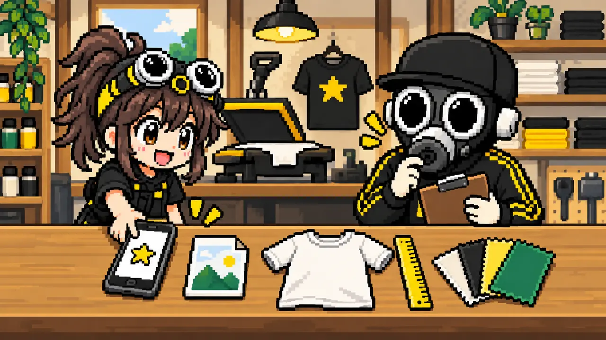

「デザインがある」と「そのままプリントできる」は別です
完成イメージが見える画像でも、実際のTシャツへ希望サイズでプリントするには、画質・背景・色・文字・実寸などの確認が必要です。スマホの画面できれいに見えることと、大きくプリントしてきれいに仕上がることは同じではありません。
ただし、画像しか持っていないから制作できないとは限りません。元画像の状態と希望する仕上がりを確認し、背景処理、サイズ調整、描き直しなどで使える形に近づけられる場合があります。

専門用語が分からなくても大丈夫。まずは今持っている画像と、Tシャツで使いたい大きさを見せてください。
デザイン画像とプリントデータの違い

色・形・配置など、「何を作りたいか」を見るための画像。スクリーンショットやSNS保存画像でも、希望を伝える資料にはなります。
希望する実寸で必要な画質があり、背景・色・線・文字などがプリント方法に合わせて確認できる状態です。
プリント相談で送っていただく画像の例
画面の表示部分が含まれ、元画像より小さく圧縮されていることがあります。
表示用に縮小・圧縮され、プリント利用の権利も確認できない場合があります。
完成の雰囲気がよく伝わります。制作時には、絵柄だけの元画像が別に必要になることがあります。
元の作成データや大きな書き出し画像があれば使える可能性が上がります。背景や細部の確認も必要です。
どの画像も、作りたいイメージを共有する大切な手がかりです。まずはお手元にある画像をそのままお送りください。そのまま製造に使えるか、追加のデータや調整が必要かをこちらで確認します。
小さい画像は、大きくしても細部が増えません

画像は小さな点の集まりです。横幅の小さい画像をA3程度まで引き伸ばすと、輪郭がギザギザになったり、小さな文字が読めなくなったりします。AIで拡大しても、元にない文字や細部が必ず正しく戻るわけではありません。
21×29.7cmを300ppiで考えると、約2480×3508px。写真や細かな絵柄では大きな元画像が安心です。
29.7×42cmを300ppiで考えると、約3508×4961px。必要条件はプリント方法と絵柄で変わります。
ピクセル数だけで合否は決まりません。単純なロゴなら描き直せる場合があり、写真では元画像の質がより重要になります。
白く見える背景と、透明な背景は違います

白い画面の上では同じように見えても、JPEGなどの白背景は透明ではありません。濃色Tシャツへそのままプリントすると、デザインの周囲に白い四角が出ることがあります。
背景を残した四角いデザインにしたいのか、人物やロゴの輪郭で切り抜きたいのかを決めます。透過PNGでも、輪郭に白い消し残しや半透明の影が残っていないか確認が必要です。
画質以外にも確認するポイントがあります
別の環境で書体が変わらないよう、編集可能データでは文字のアウトライン化などを行います。
画面では見えても、生地とインクでは潰れたり消えたりする太さがあります。
スマホは光で色を表示し、Tシャツはインクと生地で見せます。完全に同じ見え方にはなりません。
襟、脇、ポケット、厚い縫い目の近くなど、データ上では置けても加工しにくい場所があります。特殊な位置の実現方法はこちら。
ファイル形式だけで「使える」とは判断できません
| 形式 | 確認すること |
|---|---|
| PNG | 背景透過ができ、高解像度ならロゴやイラストに使いやすい形式です。 |
| JPEG | 写真に向きますが背景透過はできません。保存の繰り返しで劣化します。 |
| 文字や図形をきれいに保持できる場合があります。ただし、中に低解像度画像を配置したPDFは自動的に高画質にはなりません。 | |
| AI・SVG | 図形を拡大しやすい形式です。配置された写真や画像部分は、元の解像度確認が必要です。 |
プリント店へ送ると確認が早いもの

- スクリーンショットではなく、保存している中で一番大きな元画像
- Canvaや作成アプリの元データ、または最大サイズの書き出し画像
- プリントしたい場所と横幅（例：左胸に横10cm）
- Tシャツの色・素材・だいたいの枚数
- 使用する日と希望納期
- 背景を残したいか、輪郭で切り抜きたいか

プリントデータか分からなくても、元画像と「どう作りたいか」を送れば確認してもらえるんだね！
MISSION COMPLETE!
画像しかなくても、まずは相談できます
「この画像は使える？」「背景を消したい」「大きくプリントしたい」など、分かるところから送ってください。データの状態と希望を一緒に整理します。
画像データを相談する ▶裏公式LINEで相談する▶